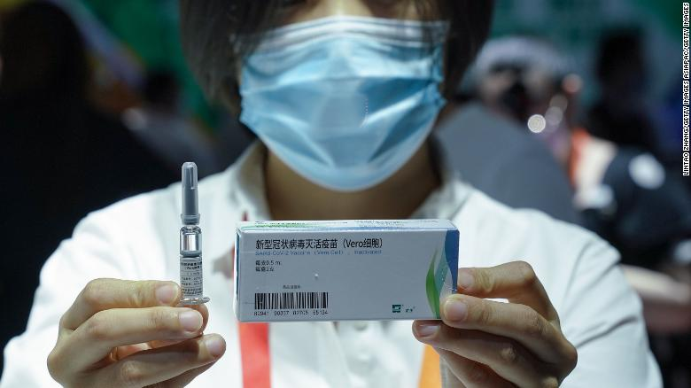
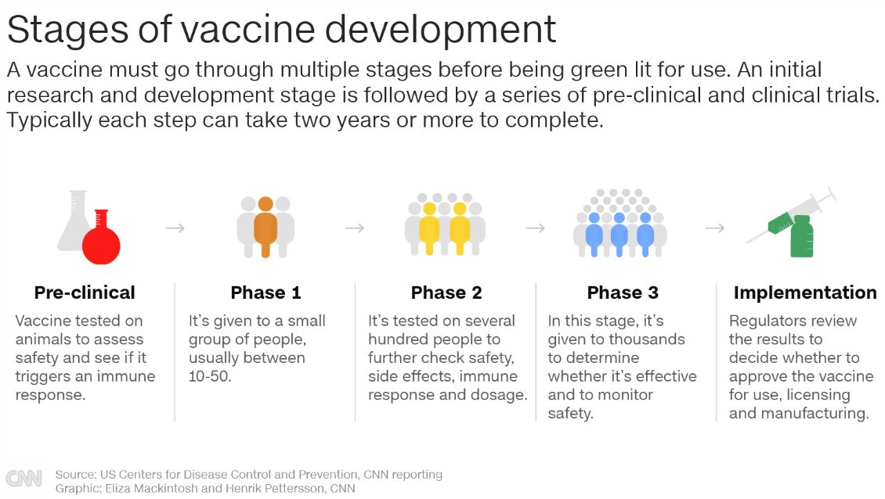
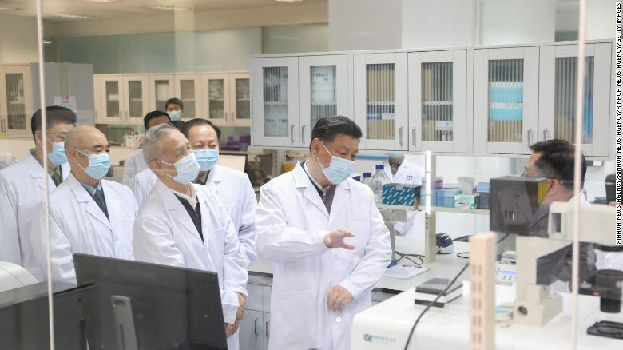

By Nectar Gan, CNN
Updated 0111 GMT (0911 HKT) October 10, 2020
Inside China's new lab conducting late-stage vaccine trials 02:25
(CNN) - The global push to develop a coronavirus vaccine is gathering pace, but much to the likely frustration of US President Donald Trump, caution exercised by American drug makers and regul ators has put China out in front ... for now.
Moderna, a leading coronavirus vaccine maker, said this month it will not be ready to apply for emergency use aut horization until at least November 25. Meanwhile, the US-based trial sites of another frontrunner, AstraZeneca, have placed testing on hold after a participant in Britain developed a serious illness last month, further undermining Trump's hopes that a vaccine would be ready in time for Election Day on November 3.
The stringent US safety protocols have shifted the so-called vaccine race in China's favor, where -- for better or worse -- political will holds a much larger sway over state, commercial and individual actions, potentially bending rules or norms as needed.
China's leader Xi Jinping has repeatedly urged the country's scientists to accelerate the research and development of coronavirus vaccines. Chinese drug makers have also been told to treat their work as an "important political task" -- and they are doing everything they can to follow that directive.
Two are from China National Biotec Group (CNBG), a unit of state-owned pharmaceutical giant China National Pharmaceutical Group (Sinopharm). Another candidate, CoronaVac, was developed by drugmaker Sinovac Biotech, with the remaining one jointly developed by the Chinese military-linked Beijing Institute of Biotechnology and vaccine company CanSino Biologics.
Two coronavirus vaccine candidates from the China National Biotec Group (CNBG) are now in phase 3 clinical trials.
CNBG Chairman Yang Xiaoming said last month that the progress of its vaccines was going "faster than expected." The company has carried out Phase 3 trials in countries including the United Arab Emirates, Bahrain, Peru, Morocco, and Argentina, with a total of 42,000 participants.
"We're only one last mile away from eventual success," he recently told a bioindustry conference in the Chinese city of Wuhan, where the coronavirus was first detected last December.
"I believe it's very likely they'll be the first to announce the successful development of a vaccine," said Yanzhong Huang, a senior fellow for global health at the Washington-based Council on Foreign Relations.
"But the key question is how well the international society, especially the scientific community, will recognize it."
A vaccine usually takes years to develop. But to stop a virus that has killed more than a million people worldwide, scientists are developing Covid-19 vaccines at unprecedented speed. In China, efforts to ramp up that process have included the controversial testing of hundreds of thousands of people outside the normal regulatory approval process.
Since July, Chinese drug makers have been administering experimental vaccines on people working in "high-risk" professions -- including medical workers and border agents -- under a government-approved emergency use program, which allows vaccine candidates to be used on a limited scale before their safety and efficacy have been fully proven by clinical trials.
The vaccine candidates approved for emergency use are still in Phase 3 trials. Some experts worry that fast-tracking the normal approval process could potentially expose participants to unknown side effects, and Chinese drug makers are taking risks that contravene international ethical and safety norms.
Huang, the CNBG chairman, told a conference in Wuhan last month that more than 100 people had received the company's early stage coronavirus vaccine candidate before it was approved for human trials on April 12 -- including himself.
The sense of self-sacrifice may also partially explain the large number of people willing to take the risk and get vaccinated under the emergency use program.
The vaccine candidate developed by Sinovac is also included in the emergency use program, according to Reuters.
The company has injected 90% of its employees and family members -- about 2,000 to 3,000 people -- with its experimental vaccine.
Separately, the Chinese government also approved the use of the coronavirus vaccine from CanSino Biologics for the country's military in June.
Chinese health officials say the emergency use program has its legal basis in the country's vaccine law, and participation is entirely voluntary.
But given that many participants are public or civil servants and state-owned company workers, some might have felt politically pressured into signing up, Huang said -- especially when their bosses and colleagues have done so.
"I always feel like I'm not sure to what extent they should be consider 'volunteer' as defined by the West," he said of the participants.
There is also the question of necessity for emergency testing in China, given the country has not reported any locally transmitted symptomatic coronavirus cases for more than a month.
The Chinese government has faced sharp criticism -- most notably from the US -- for its initial handling of the coronavirus outbreak. Its subsequent "mask diplomacy" -- an effort to ship medical supplies to countries struggling with Covid-19 -- also fueled suspicion that it was trying to change the coronavirus narrative.
Chinese President Xi Jinping learns about the progress on a candidate coronavirus vaccine during his visit to the Academy of Military Medical Sciences in Beijing in March.
Being first to provide the world with a vaccine would present China with an opportunity to shore up its global standing by positioning itself as a leader in fighting the pandemic, filling the void left by the US and consolidating its position as a true superpower.
In 2018, Changsheng Biotechnology Co. was fined for fabricating vaccine production and inspection data. In 2017, the same company was already found to have produced ineffective diphtheria, pertussis and tetanus (DPT) vaccines intended for children. Wuhan Institute of Biological Products, a CNBG subsidiary behind one of the vaccines in Phase 3 trials, was also found to have made defective DPT vaccines.
In the US, as much as Trump wants to expedite the development process, any move that undermines the safety and efficacy of a future vaccine is likely to be met with strong pushback from experts, regulators and drug makers.
Amid rising concerns that a vaccine could be rushed by political pressure into emergency use authorization (EUA) before Election Day without proper safety checks, the US Food and Drug Administration this week published new guidance, saying it would like to see two months of safety data after volunteers get their second dose of vaccine before companies may apply for EUA -- something that would make it impossible to get an EUA before November 3.
In the first presidential debate, Trump said he had spoken to the major vaccine makers, including Moderna, and they had told him a vaccine could be available soon.
Moderna CEO Stéphane Bancel said at a conference hosted by the Financial Times last week that he has received no political pressure, in either direction.
Other News